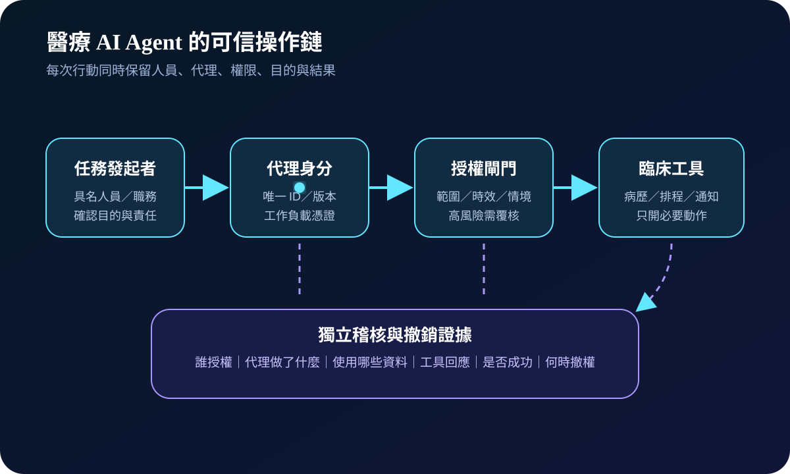
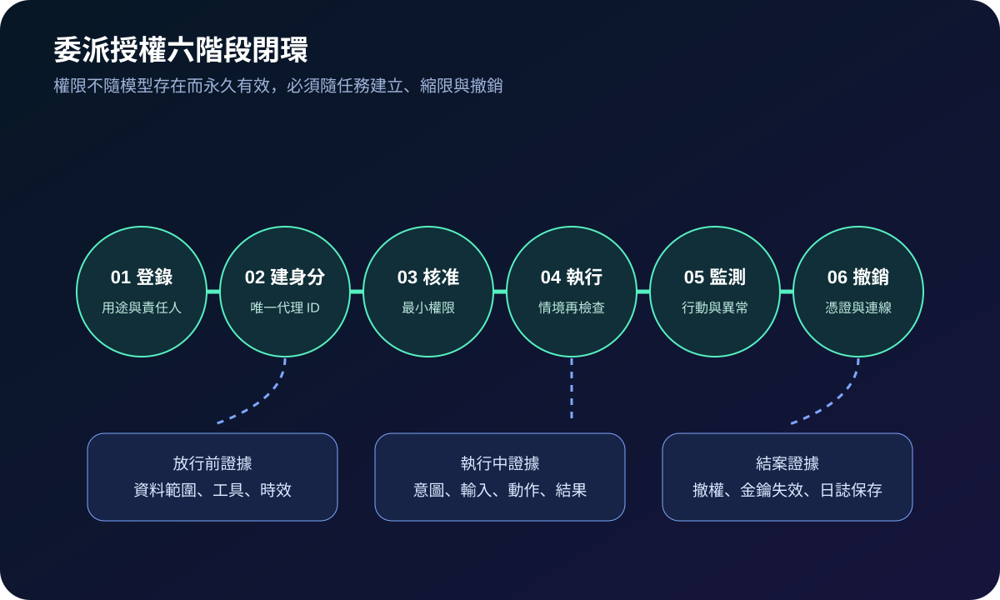
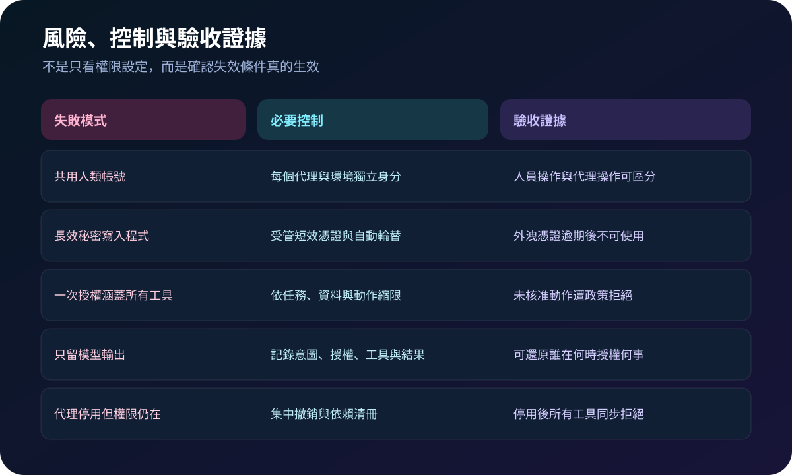

醫療資安國際觀察 · 2026-10-17
醫療 AI Agent 如何避免借用人類帳號：從代理身分到授權鏈
作者：Dr. William｜醫療資訊與資安治理實務工作者
AI Agent 若直接借用醫事人員帳號、共用 API 金鑰或長效權杖，院方將難以區分「誰提出任務、哪個代理執行、獲准做什麼、何時失效」。代理身分治理的核心，是讓每次行動可辨識、可縮限、可撤銷與可追查。
名詞解釋：代理身分不是另一個人類帳號
代理身分是分配給 AI Agent 或其工作負載的唯一識別與憑證；委派授權則表示具權責的人員或系統，在特定目的、資料、工具、時間與情境下，允許代理代為執行有限行動。身分回答「誰在執行」，授權回答「目前可以做什麼」，人工覆核則處理高風險決策與責任邊界。
國際現況與適用邊界
NIST 於 2026 年發布軟體與 AI Agent 身分及授權概念文件，將代理的身分、授權來源、行動鏈與責任追蹤列為核心問題；NIST 同年的意見摘要進一步整理代理身分、授權與問責的產業回饋。英國 NCSC 的服務身分原則則要求非人類工作負載使用唯一身分、強式驗證、最小權限、生命週期管理及可監測活動。
台灣適用原則：NIST 文件與 NCSC 原則屬國外技術參考，不是台灣醫療機構的直接法定義務。可採用代理身分、委派範圍、短效憑證、人工覆核及撤銷證據方法；實際部署仍須依台灣法令、院內權責、醫療專業判斷、個資用途與系統安全限制辦理。
規劃：先定義責任、能力與失效條件
範圍宜從會寫入病歷、變更排程、發送病人訊息、建立醫囑草稿或觸發外部流程的 Agent 開始。責任至少涵蓋臨床單位、資料擁有者、系統擁有者、資安、法遵、採購與供應商。驗收指標可包含代理身分覆蓋率、長效秘密淘汰率、高風險行動人工覆核率、逾期授權拒絕率、撤銷完成時間及事件可追溯率。
實作：六階段建立委派閉環
- 登錄：記錄用途、模型與版本、資料範圍、可用工具、責任單位及禁止行動。
- 建身分：為每個代理、環境與工作負載建立唯一 ID，不共用人類帳號。
- 核准：依任務發出短效、最小權限授權，高風險動作要求具名覆核。
- 執行：工具閘門再次檢查人員、代理、目的、資料、情境與臨床狀態。
- 監測：保存授權者、代理版本、輸入、工具呼叫、資料範圍、結果與拒絕事件。
- 撤銷：任務結束、版本更換、異常或離職事件發生時，同步停用憑證、權限與連線。

風險：可登入不代表可問責
常見失敗包括代理沿用醫師帳號、秘密寫入程式碼、單一權杖涵蓋所有工具、只保存聊天內容，以及停用代理後下游權限仍可使用。緩解方式是獨立工作負載身分、受管短效憑證、逐工具動作授權、主機外稽核、版本與環境隔離，以及定期執行撤銷與負向測試。

可執行清單
- 每個 Agent、版本與環境是否有獨立且可停用的身分？
- 授權是否明確限制資料、工具、動作、時間與使用目的？
- 寫入、刪除、對外傳送或影響照護的動作是否需要具名覆核？
- 憑證是否由受管機制提供短效存取，而非寫入提示、程式或設定檔？
- 稽核是否能連結發起者、代理版本、授權政策、工具呼叫與結果？
- 停用代理後，所有下游工具、資料與工作階段是否同步拒絕存取？
來源
- NIST NCCoE｜Accelerating the Adoption of Software and AI Agent Identity and Authorization（發布：2026-02-05；文件性質：概念文件草案；查閱：2026-10-17）
- NIST｜Comments on Software and Agentic AI Identity Concept Paper（發布：2026-09-29；查閱：2026-10-17）
- UK NCSC｜Using a cloud platform securely（頁面更新日期未標示；查閱：2026-10-17）
內容說明
本文依健康台灣深耕計畫相關治理內容整理，並參考 NIST 與英國 NCSC 公開資料，提出醫療 AI Agent 的代理身分、委派授權、短效憑證、稽核與撤銷方法；不把外國草案或技術原則視為台灣法定義務，也不取代主管機關公告、院內臨床治理、個資法遵或法律意見。